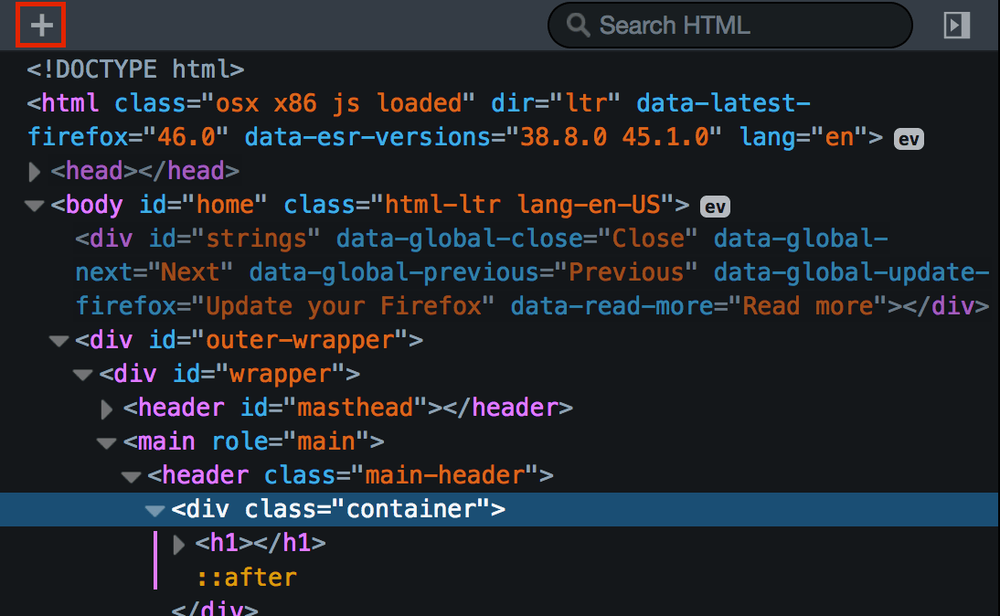

Devin Saucier
"You should enjoy the little detours to the fullest."
On the other hand, we denounce with righteous indignation and dislike
men who are so beguiled and demoralized by the charms of pleasure of the
moment, so blinded by desire, that they cannot foresee the pain and
trouble that are bound to ensue; and equal blame belongs to those who
fail in their duty through weakness of will, which is the same as saying
through shrinking from toil and pain.
These cases are perfectly simple and easy to distinguish. In a free
hour, when our power of choice is untrammelled and when nothing prevents
our being able to do what we like best, every pleasure is to be welcomed
and every pain avoided. But in certain circumstances and owing to the
claims of duty or the obligations of business it will frequently occur
that pleasures have to be repudiated and annoyances accepted.

The wise man therefore always holds in these matters to this principle
of selection: he rejects pleasures to secure other greater pleasures, or
else he endures pains to avoid worse pains. But I must explain to you
how all this mistaken idea of denouncing pleasure and praising pain was
born and I will give you a complete account of the system, and expound
the actual teachings of the great explorer of the truth, the
master-builder of human happiness. No one rejects, dislikes, or avoids
pleasure itself, because it is pleasure, but because those who do not
know how to pursue pleasure rationally encounter consequences that are
extremely painful.